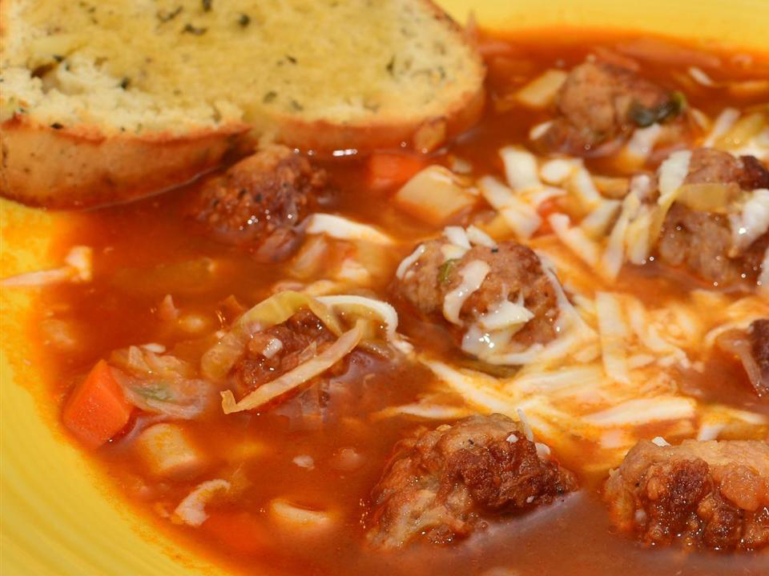

Meatball Soup

A beautiful and tasteful looking baked meatball soup that is easy to prepare for yourself, friends or family.
- 2 quarts water
- 20 small meatballs
- 2 (8 ounce) cans tomato sauce
- 2 cubes beef bouillon cube
- ½ teaspoon dried oregano
- ½ teaspoon dried basil
- ¼ teaspoon dried thyme
- salt to taste
- ground black pepper to taste
- 2 stalks celery, sliced
- 2 carrots, sliced
- 1 clove garlic, minced
- 1 cup elbow macaroni
- Step 1
Bring water to a boil in a large saucepan. Add meatballs, tomato sauce, bouillon, oregano, basil, thyme, salt and pepper to taste, celery, carrots, and garlic, and simmer for 30 minutes.
- Step 2
Add macaroni and cook until pasta is done. Top with parmesan cheese to serve.
Back to home page